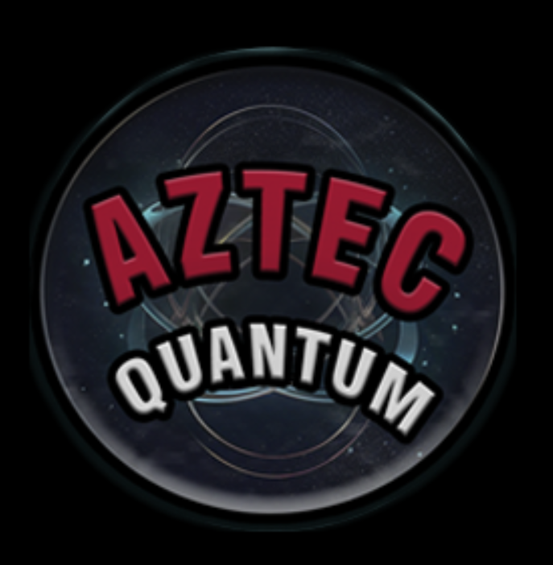
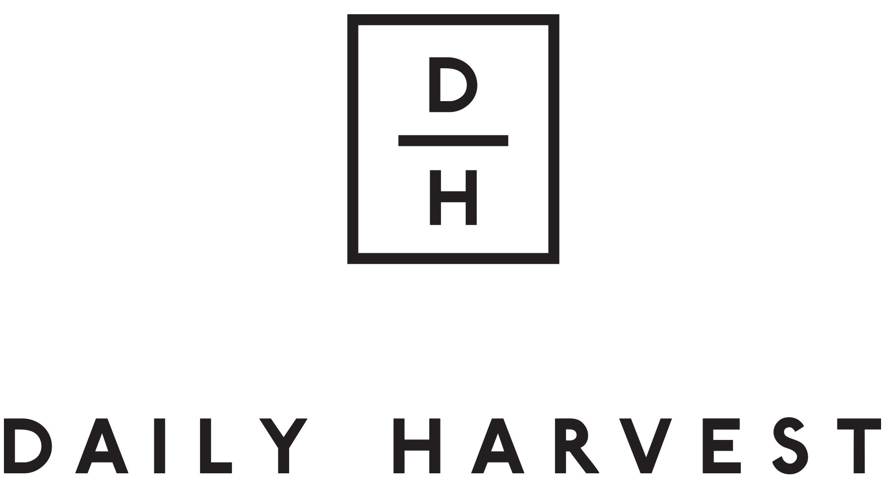

Experience

Data Science, Analytics Intern
Expedia GroupMay 2024 - July 2024
- On the Traveler Product Services Platform team

Founder and Vice-President
Quantum Computing ClubMay 2023 - Present
- Founded the first Quantum Computing Club at San Diego State University to expand student outreach for the subject at the school.
- Organized IBM certified events and distributed 28 Qiskit certificates to members of the club.
- Coordinated with the student board to communicate with faculty members and students from the university to direct operations and meetings for the group.
- Created curriculum to facilitate and oversee a 5-month long quantum computing project while leading several teams for successful delivery.
Teaching Assistant
San Diego State UniversityAugust 2022 - Present
- Synchronously aided 2 sections of Computer Organization at San Diego State University
- Implemented grading scripts to automatically grade student submissions on labs and homework
- Held 2 weekly office hours sessions available to 140 students to assist and guide questions regarding programming assignments

Software Engineering Intern
Daily HarvestMay 2022 - August 2022
- Upgraded legacy system which has logic to determine which shipments meet the criteria to obtain additional promotional materials by removing dependencies on complex tools while refactoring code to fit current systems
- Increased server efficiency and improved code readability due to the creation and development of shared libraries
- Utilized Flask to create additional Restful APIs and Terraform for asynchronous task queues
- Used Git as a version control system to collaborate with team members and interact with CI/CD process
- Tools used: Python, Flask, Google Cloud Console, Storage buckets, Task queues, Circle Ci, Git, Restful APIs, Peewee ORM
Club President
Woodbridge High SchoolMarch 2020 - June 2021
- Founded the first Hispanic/Latinx club at Woodbridge High School to promote unity and inclusion
- Coordinated with the student board to communicate with faculty members and students from the school and direct operations and meetings for the group
- Ensured the continuation of the club while at college and peaked at 27 members in our inaugural year